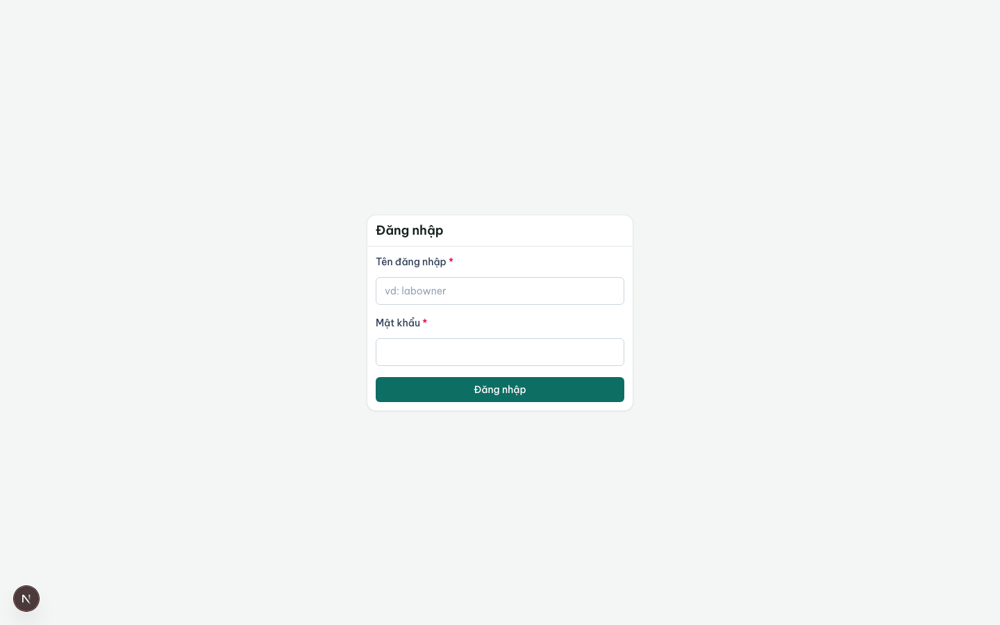
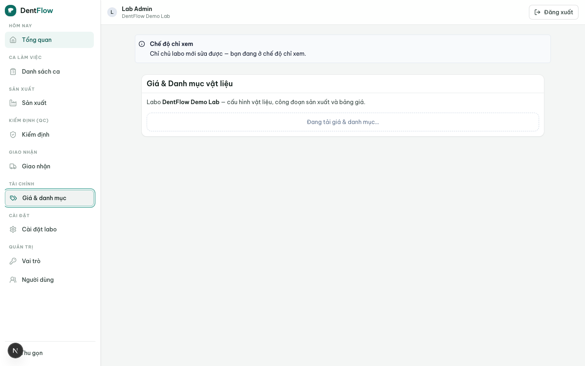

Cấu hình labo lần đầu
Trước khi labo nhận đơn đầu tiên, có bốn thứ cần khai một lần. Làm xong bốn bước này, hệ thống tự suy ra công đoạn nào phải làm và giá bao nhiêu cho mỗi đơn — bạn không phải nhập tay mỗi lần. Đây là cấu hình gốc mà cả sản xuất và công nợ đều phụ thuộc.

1. Khai vật liệu + công đoạn (material catalog)
Khai danh mục material mà labo chạy (zirconia, e.max, PFM/sứ kim loại, acrylic…). Mỗi material khai chuỗi production stage tương ứng — ví dụ zirconia: design → milling → sinter → polish/glaze → QC. Nhờ đó khi một work order được tiếp nhận, hệ thống biết áp chuỗi công đoạn nào.
Nếu một material khai thiếu công đoạn, đơn dùng material đó không suy ra được chuỗi stage và sẽ bị chặn tiếp nhận với cảnh báo cấu hình thiếu. Khai đủ công đoạn cho từng material trước khi go-live.
2. Lập bảng giá (price list)
Bảng giá định giá theo đơn vị/răng (per unit), phân bậc theo material và dòng sản phẩm/phôi. Một dòng giá = một bộ (loại unit, material, dòng sản phẩm) → đơn giá VND/đơn vị. Bậc giá điển hình ở Việt Nam: zirconia > e.max > PFM/sứ kim loại > acrylic.
- VND, số nguyên đồng — không phần thập phân, không giá âm.
- Có phiên bản (versioning) — mỗi lần xuất bản tạo một phiên bản mới có ngày hiệu lực; phiên bản cũ giữ nguyên để truy lại giá đã áp cho đơn trước.
- Chốt cứng vào đơn — khi tiếp nhận work order, hệ thống tự áp giá từ phiên bản đang hiệu lực và chốt cứng; sửa bảng giá sau này không đổi giá các đơn đã chốt.
- Giá riêng theo phòng khám — có thể đặt override cho từng phòng khám; không có override thì rơi về bảng giá sỉ gốc. Giá sỉ là riêng tư, không lộ cho phòng khám khác.

3. Bộ vai trò mặc định được seed
Mỗi labo được seed sẵn một bộ vai trò (lab role) khớp với các actor thực tế trong xưởng. Bạn có thể dùng ngay và tinh chỉnh quyền cho từng vai (trừ lab_admin được bảo vệ, không sửa/xoá):
| Vai trò (code) | Ai / làm gì |
|---|---|
lab_admin | Chủ labo — toàn quyền, không sửa/xoá được (systemProtected). |
coordinator | Điều phối — tiếp nhận work order, phân technician, đặt hạn. |
technician | Kỹ thuật viên — cập nhật tiến độ công đoạn được giao (milling/sinter/polish…). |
qc | QC — duyệt hoặc đánh trượt trước khi giao. |
shipper | Giao nhận — cập nhật trạng thái giao, xác nhận đã giao. |
accountant | Kế toán — phát hành hoá đơn, theo dõi công nợ phải thu. |
Người dùng phía labo đăng nhập bằng loginId (duy nhất toàn hệ thống) + mật khẩu; mỗi user thuộc đúng một labo và có thể mang nhiều vai trò trong cùng labo đó.
4. Tạo QR / link để phòng khám đặt đơn
Cuối cùng, tạo QR hoặc web link để phòng khám đặt đơn không cần cài đặt. Phòng khám quét QR, điền phiếu (răng, material, shade, hạn), chụp ảnh + Rx và gửi — đơn rơi thẳng vào case queue của bạn với đủ thông tin. Đây là kênh connectionless, đòn bẩy chính để kéo phòng khám lên mạng lưới.